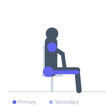
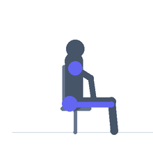

Exercise guide / Hip 90-90 Position Switch
Hip 90-90 Position Switch
The 90-90 hip switch is a floor-based hip mobility exercise in which both hips are bent to 90 degrees in a seated position — one leg in external rotation in front and one in internal rotation behind. The switch involves transitioning from one side to the other by lifting both knees and rotating the entire lower body to the opposite 90-90 configuration. This exercise challenges hip internal and external rotation range, adductor flexibility, and hip socket mobility through a continuous dynamic flow.
Primary muscles
gluteus maximus
adductor magnus
infraspinatus
Secondary muscles
Equipment
No Equipment (Bodyweight)


Starting position
- Sit on the floor with both knees bent to 90 degrees. The front leg is in external rotation (shin perpendicular to the body) and the back leg is in internal rotation (shin parallel to and alongside the body).
Setup
- No equipment needed. A mat is recommended. Sit tall with an upright torso. Using hands on the floor for support is encouraged initially.
Steps
- Step 1: Begin in the 90-90 position with the right leg externally rotated in front and the left leg internally rotated behind.
- Step 2: Lift both knees off the floor slightly and rotate them to the opposite side, so the left knee comes in front and the right goes behind.
- Step 3: Lower both knees to the floor in the new 90-90 position (left front, right back). This is one switch.
- Step 4: Hold the new position for 2-3 seconds, then switch back or continue to alternate.
Coaching cues
- Sit tall — do not lean over the front leg
- Feel the outer hip of the front leg and the inner hip of the back leg stretching
- The switch is a rotation — lead from the knees, not the feet
Breathing
- Exhale during the transition. Inhale and settle into each position.
Range of motion
- Both shins to the floor in both 90-90 positions is the target. Work toward this progressively.
Tempo
- 2-3s hold in each position before switching. Transitions should be slow and controlled.
Common mistakes
- Collapsing the torso toward the front leg — maintain an upright position throughout
- Forcing range by pushing the knees down with the hands — the range should come from the hip joint passively
- Lifting both knees high and using momentum — aim for a controlled, low transition
Safety
- If sharp hip or knee pain occurs during the rotation, reduce range or stop and assess with a physiotherapist
- Hip internal rotation restriction is common — work at the available range, not beyond it
Training
- mobility: 5–10 reps
- mobility: 2–3 sets
- Rest: {'mobility': 60}